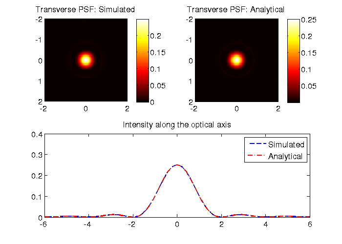
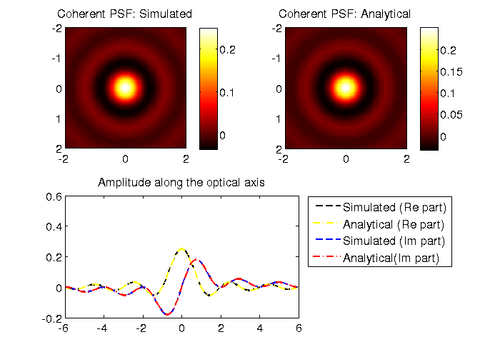
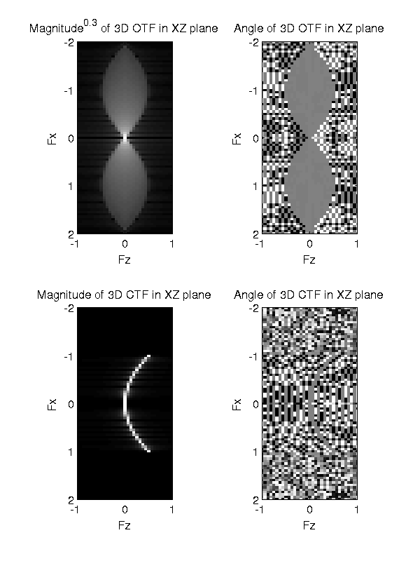

Evaluate accuracy of the Microlith package.
3D image of a point under fluorescent and coherent microscopes, i.e., incoherent and coherent point spread functions (PSF) are computed and compared with analytical expressions found in Born and Wolf. Also, 3D optical transfer functions are computed as 3D Fourier transforms of the PSFs.
Written by Shalin Mehta, www.mshalin.com, License: GPL v3 or later.
Contents
Set-up simulation grid:
% All quantities are expressed in normalized optical coordinates % One can obtain the physical spatial coordinates like this: % x (physical)= x (optical) * (lambda/NA). % In normalized coordinates, the jinc function's first zero occurs at 0.61 % and the circular pupil cuts-off at 1. L=10; % Support over which we want to calculate the image. xs=0.05; % Sampling rate in the specimen plane. % To avoid aliasing, specimen should be sampled at 0.2 lambda/NA % atleast. % Sampling rate in the specimen plane determines extent in frequency % domain. xs=0.1 should suffice as the transfer function fits into the square with % side 2 or (1+S)/sqrt(2) and sampling at 0.1 defines support of [-5 5]. v=-L:xs:L; % Transeverse extent of simulation. u=-8:2*xs:8; % Axial extent of simulation. [vx, vy]=meshgrid(v); % Point specimen. specimen=double(vx==0 & vy==0); % Some other specimens for which analytical image is easy to compute. % % specimen=double(xx==0); %Slit % % specimen=ones(size(xx)); %Transparent.
Case 1: 3D PSF of a fluorescent microscope.
params.NAo=1; params.lambda=1; params.nImm=1; params.nEmbb=1; RadioMetricFactor=params.NAo^2*(xs/0.1)^2; % Factor that ensures radiometric consistency. fluormic=microlith(v,u); computesys(fluormic,'Fluorescence',params); computeimage(fluormic,specimen,'CPU'); % Compare the simulated and theoretical images. XYslice=fluormic.img(:,:,u==0); axialprof=squeeze(fluormic.img(v==0,v==0,:)); XYsliceAnalytical=RadioMetricFactor*jinc(sqrt(vx.^2+vy.^2)).^2; axialprofAnalytical=RadioMetricFactor*sinc(u/2).^2; figure(1); clf; set(1,'Position',[100 100 700 500],'defaultaxesfontsize',14); colormap hot; subplot(221); imagesc(v,v,XYslice); axis equal; xlim([-2 2]); ylim([-2 2]); colorbar; title('Transverse PSF: Simulated'); subplot(222); imagesc(v,v,XYsliceAnalytical); axis equal; xlim([-2 2]); ylim([-2 2]); colorbar; title('Transverse PSF: Analytical'); subplot(2,2,[3 4]); plot(u,axialprof,'b--',u,axialprofAnalytical,'r-.','LineWidth',2); xlim([-6 6]); title('Intensity along the optical axis'); legend('Simulated','Analytical');
Case 2: 3D PSF of a coherent microscope.
params.NAo=1; params.lambda=1; params.nImm=1; params.nEmbb=1; RadioMetricFactor=params.NAo^2*(xs/0.1)^2; % Factor that ensures radiometric consistency. cohmic=microlith(v,u); computesys(cohmic,'Coherent',params); computeimage(cohmic,specimen,'CPU'); % Compare the simulated and theoretical images. XYslice=cohmic.img(:,:,u==0); axialprof=squeeze(cohmic.img(v==0,v==0,:)); XYsliceAnalytical=RadioMetricFactor*jinc(sqrt(vx.^2+vy.^2)); axialprofAnalytical=RadioMetricFactor*sinc(u/2).*exp(1i*pi*(u/2)); figure(2); set(2,'Position',[100 100 700 500],'defaultaxesfontsize',14); colormap hot; subplot(221); imagesc(v,v,real(XYslice)); axis equal; colorbar; xlim([-2 2]); ylim([-2 2]); title('Coherent PSF: Simulated'); subplot(222); imagesc(v,v,XYsliceAnalytical); axis equal; colorbar; xlim([-2 2]); ylim([-2 2]); title('Coherent PSF: Analytical'); subplot(2,2,[3 4]); plot(u,real(axialprof),'k--',u,real(axialprofAnalytical),'y-.',... u,imag(axialprof),'b--',u,imag(axialprofAnalytical),'r-.',... 'LineWidth',2); xlim([-6 6]); title('Amplitude along the optical axis'); legend('Simulated (Re part)','Analytical (Re part)','Simulated (Im part)','Analytical(Im part)',... 'Location','BestOutside');
Compute the 3D OTF of the fluorescence microscope and 3D CTF of the coherent microscope.
OTF3D=fftshift(fftn(ifftshift(fluormic.img))); CTF3D=fftshift(fftn(ifftshift(cohmic.img))); OTFXZ=squeeze(OTF3D(:,fluormic.m==0,:)); CTFXZ=squeeze(CTF3D(:,cohmic.m==0,:)); figure(3); clf; colormap gray; set(3,'Position',[100 100 600 800],'defaultaxesfontsize',14); subplot(221); imagesc(fluormic.mu,fluormic.m,abs(OTFXZ).^(0.3)); axis equal; title('Magnitude^{0.3} of 3D OTF in XZ plane'); xlabel('Fz'); ylabel('Fx'); ylim([-2 2]); xlim([-1 1]); subplot(222); imagesc(fluormic.mu,fluormic.m,angle(OTFXZ)); axis equal; title('Angle of 3D OTF in XZ plane'); xlabel('Fz'); ylabel('Fx'); ylim([-2 2]); xlim([-1 1]); subplot(223); imagesc(fluormic.mu,fluormic.m,abs(CTFXZ)); axis equal; title('Magnitude of 3D CTF in XZ plane'); xlabel('Fz'); ylabel('Fx'); ylim([-2 2]); xlim([-1 1]); subplot(224); imagesc(fluormic.mu,fluormic.m,angle(CTFXZ)); axis equal; title('Angle of 3D CTF in XZ plane'); xlabel('Fz'); ylabel('Fx'); ylim([-2 2]); xlim([-1 1]);